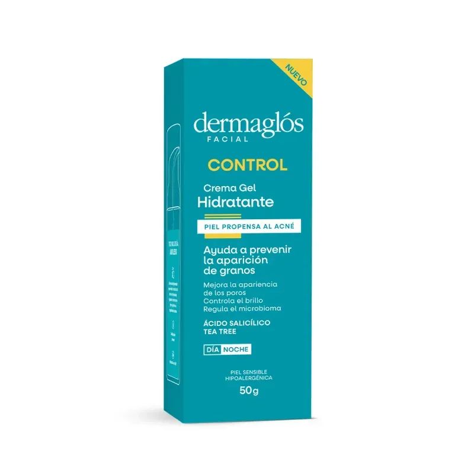

Crema para el control del acné
$45.750
Marca:Dermaglós
Crema hidratante que ayuda a controlar el acné y prevenir la formación de granos. Fórmula libre de aceites (oil free), especialmente desarrollada para pieles con tendencia acneica, que hidrata sin obstruir los poros.
Stock: 18 Unidades
Categoría: Skincare
#AntiAcné #PielGrasa #OilFree
Reviews
- Usuario: Martina G
Rating: ⭐⭐⭐⭐⭐ (5/5)
Fecha: 03/09/2026
Comentario: "La uso hace un mes y noté que los granitos aparecen mucho menos. Hidrata bien y no deja la piel grasosa." - Usuario: Julián P
Rating: ⭐⭐⭐⭐ (4/5)
Fecha: 28/08/2026
Comentario: "Buena textura y se absorbe rápido. Todavía no vi grandes cambios pero recién empiezo." -
Usuario: Sofía R
Rating: ⭐⭐⭐ (3/5)
Fecha: 15/08/2026
Comentario: "Cumple lo que promete pero el envase es chico para el precio."